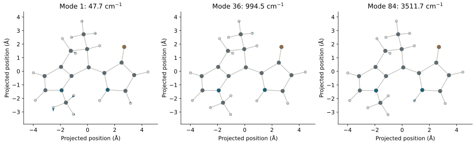
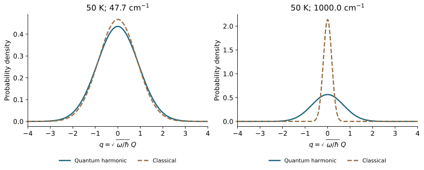
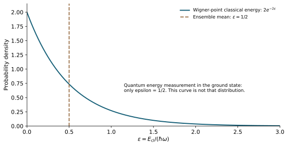

Molecular Excited States — Part II
From Hessians to Wigner Initial Conditions
An optimized geometry supplies one point on a molecular potential-energy surface. An ensemble of initial conditions also needs the spread of nuclear positions and momenta. The route used here is to approximate the local vibrations as independent harmonic oscillators, sample their Wigner distributions, and transform the sampled normal coordinates back into atomic coordinates and velocities.
This is the nuclear counterpart of a familiar phonon calculation. We continue with the same 30-atom molecular motor as Part I. The main question is practical: how did one tutorial structure become a pool of 2000 candidate geometries without first running a molecular-dynamics trajectory? The harmonic model explains that construction. Its initial-state approximation and the later NaF propagation are separate choices.
1. Why One Optimized Geometry Is Insufficient
In a VASP relaxation, the atomic forces approach zero at an equilibrium structure. The same condition applies to an isolated molecule. Let \(\mathbf R\) collect its \(3N\) Cartesian coordinates, and let \(E(\mathbf R)\) denote the electronic potential energy used to prepare the nuclei. An optimized stationary structure \(\mathbf R_0\) satisfies
This condition determines a center. It does not specify a nuclear distribution around that center. At finite temperature the molecule has thermally occupied vibrations; at zero temperature its nuclear wavefunction still has a finite width. Giving every trajectory exactly \(\mathbf R_0\) and zero velocity would remove both sources of initial nuclear spread.
To construct that spread, we first need the restoring forces near \(\mathbf R_0\). A local harmonic model supplies those forces and a tractable quantum initial distribution. Throughout the derivation, \(\omega\) means angular frequency, while a reported vibrational wavenumber \(\tilde\nu\) in cm−1 obeys \(\omega=2\pi c\tilde\nu\). Masses, lengths, energies, and time must use a consistent unit system.
2. Read the Local Curvature from the Hessian
Write \(\Delta\mathbf R=\mathbf R-\mathbf R_0\). Expanding the energy about the stationary geometry gives
The Hessian \(\mathbf K\) is a matrix of local force constants. Its diagonal entries describe curvature along individual Cartesian coordinates. Off-diagonal entries describe how displacing one coordinate changes the force along another. These couplings are why independently shaking every atom would not reproduce the harmonic nuclear distribution.
A central finite-difference construction uses analytical forces, with \(F_a=-\partial E/\partial R_a\):
Here \(\mathbf e_b\) is a Cartesian unit displacement and \(\delta\) is the displacement size. This is the same force-constant logic used by VASP finite-difference phonon calculations. A crystal adds periodicity and wavevector-dependent dynamical matrices; an isolated molecular Hessian describes the finite molecule directly. VASP documents the force-constant construction and its zone-center scope.
Our motor has \(N=30\), so its Cartesian Hessian is \(90\times90\). A stationary point alone is not proof of a minimum: negative curvature in the internal vibrational subspace produces an imaginary frequency. Such a direction must be diagnosed before applying a stable-oscillator initial-state model.
3. Obtain Independent Harmonic Normal Modes
Curvature alone does not determine a vibration frequency. A heavy atom accelerates less than a light atom under the same force. Introduce the diagonal Cartesian mass matrix, repeating each atomic mass three times:
The harmonic equation of motion is \(\mathbf M\Delta\ddot{\mathbf R}=-\mathbf K\Delta\mathbf R\). Define mass-weighted displacement \(\mathbf y=\mathbf M^{1/2}\Delta\mathbf R\); multiplying the equation by \(\mathbf M^{-1/2}\) gives
In the internal vibrational subspace, diagonalize the symmetric matrix \(\mathbf D\). Collect its orthonormal eigenvectors as columns of \(\mathbf L\):
For an isolated nonlinear molecule, the six rigid translations and rotations are excluded, leaving \(f=3N-6\) internal modes. The motor therefore has 84 vibrational modes. Linear molecules have five rigid modes and require a different count. The projection and normalization must match the format expected by the sampler.
Let \(\boldsymbol\pi=\mathbf M\dot{\mathbf R}\) be the atomic Cartesian momentum. The normal coordinates and their conjugate momenta are
Within this vibrational subspace, the inverse relations are \(\Delta\mathbf R=\mathbf M^{-1/2}\mathbf L\mathbf Q\) and \(\boldsymbol\pi=\mathbf M^{1/2}\mathbf L\mathbf P\). Substitute them into kinetic and potential energy:
The resulting Hamiltonian is
This is the independent-SHO approximation. Each oscillator is a collective nuclear vibration. Its effective mass is one because its coordinate is mass weighted. Independence holds in the local quadratic model; higher-order terms in the actual potential can couple the modes.

4. Represent a Quantum Oscillator in Phase Space
The harmonic reduction tells us what the modes are, but not how to initialize them. At zero temperature, quantize one mass-weighted mode:
Suppress the mode index for a moment. The ground-state wavefunction is a Gaussian,
Sampling \(|\psi_0(Q)|^2\) supplies a coordinate, but a trajectory also needs a momentum. The Wigner transform represents the density operator \(\hat\rho\) on phase space:
For the ground state, the density-matrix factor inside this integral is
The Fourier integral of this Gaussian contributes \(\sqrt{4\pi\hbar/\omega}\exp[-P^2/(\hbar\omega)]\). Combining the factors gives
Its integral over phase space is one. Integrating out \(P\) recovers \(|\psi_0(Q)|^2\); integrating out \(Q\) recovers the momentum probability density. More generally, Wigner averages reproduce expectations of the corresponding symmetrically ordered operators. A Wigner function is a quasiprobability, but this particular ground-state function is everywhere nonnegative and can be sampled with ordinary positive weights.
The exponent separates into a coordinate term and a momentum term. Thus independent standard normal random variables \(\xi_Q,\xi_P\sim\mathcal N(0,1)\) generate a sample through
The coordinate width grows as a mode becomes softer, while its momentum width decreases. Their product is \(\sigma_Q\sigma_P=\hbar/2\). Even at zero temperature neither width vanishes. Position and momentum here are phase-space sampling variables; they are not a prescription for simultaneously measuring two noncommuting operators on one molecule.
5. Include Temperature and Draw Each Mode
At finite temperature, a harmonic mode occupies vibrational levels \(n=0,1,\ldots\) with Boltzmann probabilities. Set \(\beta=1/(k_{\mathrm B}T)\) and define
The exact harmonic thermal Wigner function remains a Gaussian:
Derive the thermal factor from the vibrational-state mixture
For one mode, let \(r=e^{-\beta\hbar\omega}\) and \(s=(\omega Q^2+P^2/\omega)/\hbar\). The level probabilities are \(p_n=(1-r)r^n\); the level Wigner functions are \(W_n=(-1)^ne^{-s}L_n(2s)/(\pi\hbar)\), where \(L_n\) is a Laguerre polynomial. Use the generating function
Taking \(t=-r\) gives the signed mixture before any sampling:
This positive Gaussian is the exact harmonic thermal target. Individual excited-state Wigner functions can be negative; their signed thermal sum must be formed consistently.
Since the harmonic Hamiltonian is a sum of independent mode Hamiltonians, its thermal density operator is a tensor product. Its Wigner function therefore factorizes:
Consequently, all coordinate and momentum draws can be made independently in the normal-mode basis:
As \(T\to0\), \(C_k\to1\) and the ground-state widths are recovered. When \(k_{\mathrm B}T\gg\hbar\omega_k\), \(\coth x\simeq1/x\), so
These are the classical canonical widths in mass-weighted coordinates. The limit depends on the frequency of each mode. A low-frequency deformation can be thermally active while a high-frequency stretching mode remains close to its quantum ground state at the same temperature.
From normal coordinates to a molecular geometry
Strict harmonic Gaussian teaching figure; not a replay of SHARC 4.1 finite-temperature output.

6. Reconstruct the Whole Molecule
Independent modes do not mean independent atoms. Each normal-mode eigenvector specifies a collective pattern across the whole molecule. After drawing all \((Q_k,P_k)\), use the inverse transformation:
Writing the same relation for atom \(i\), with \(\mathbf e_{ik}\) its three-component part of mode \(k\), makes the assembly explicit:
One independent draw of all 84 mode pairs gives one complete molecular coordinate-and-velocity set. Repeating the draw gives an ensemble without propagating an MD trajectory between samples. The atomic displacements are generally correlated, as their covariance shows:
The off-diagonal entries need not vanish. Independent normal coordinates have become correlated Cartesian displacements. This is the precise meaning of sampling independent oscillators and then assembling the molecule.
Thermal Wigner and classical phase space
Strict harmonic Gaussian teaching figure; not a replay of SHARC 4.1 finite-temperature output.
The single-mode slider displays one chosen coordinate coefficient, while its momentum is drawn separately. Selecting all modes combines independent coordinate and momentum draws. The displayed velocities come from \(\mathbf P\), not from differentiating a manually moved slider. Neither view performs a time propagation.
7. Understand What a Sampled Energy Means
A harmonic ground state has a sharply defined quantum energy \(\hbar\omega/2\). Its Wigner samples nevertheless occupy the full phase plane. Evaluating the classical harmonic function on those points gives
The equality constrains the ensemble mean. It does not constrain each point to one energy shell. Define \(q=\sqrt{\omega/\hbar}Q\), \(p=P/\sqrt{\hbar\omega}\), and \(\epsilon=E_{\mathrm{cl}}/(\hbar\omega)=(q^2+p^2)/2\). The ground-state density is \(e^{-q^2-p^2}/\pi\). Integrating it over the polar angle gives
Many points therefore have \(E_{\mathrm{cl}}<\hbar\omega/2\). They are phase-space samples of the ground-state density operator, not individual quantum energy eigenstates. Rescaling every point to the same zero-point energy would replace the Gaussian distribution by an energy shell and change the initial state. A projective quantum energy measurement is a different operation: it returns \(\hbar\omega/2\) with certainty for this ground state.

8. Follow the Actual xTB–SHARC–CASSCF Workflow
The derivation above describes the exact thermal distribution of a quadratic model. The actual dataset construction has two further choices: which electronic method supplies that model, and how the installed sampler implements its finite-temperature proposal.
The input was the 30-atom motor from the PSiNaD tutorial. GFN2-xTB 6.7.1 optimized this structure and computed a numerical Hessian. The xTB frequency documentation describes this optimization-plus-Hessian route. The existing Hessian was mass weighted and projected to the 84 internal modes, whose frequencies span 47.744 to 3511.746 cm−1. All 84 positive modes were retained. PySCF's normal-mode analysis utility assisted the conversion; that use of PySCF did not perform a new CASSCF Hessian calculation.
SHARC 4.1 then generated 2000 candidate coordinate-and-velocity sets at 50 K. Masses were passed explicitly to maintain consistency with the Hessian conversion. In a generic directory containing the prepared frequency file and mass-input file, the sampling command has the form
python wigner.py -n 2000 -t 50 -r 2026103107 \
-f 4 -m -L 0.1 -x -o initconds normal-modes.molden < masses.stdinThe mode file contains coordinates, frequencies, and orthonormal mass-weighted eigenvectors in SHARC's format 4. The 0.1 cm−1 cutoff did not remove any of these 84 internal modes. The initconds output retains velocities as well as coordinates; its companion XYZ file alone is insufficient to reconstruct the full phase-space initial conditions.
There is an implementation distinction at finite temperature. The retained SHARC source proposes dimensionless coordinates and momenta in a finite square, selects a vibrational level during each rejection proposal, and never accepts a negative value of that level's Wigner function. Reading that logic gives a proposal density proportional to
This is not the signed sum \(\sum_np_nW_n\) derived in Section 5. The script also adjusts the center of mass and removes translational and rotational velocity components by default. Its finite-temperature candidate distribution therefore must be distinguished from the exact Gaussian illustrated above. A prior deterministic quadrature for the softest mode at 50 K found about a −4.08% coordinate-variance difference for the positive-part proposal. That number concerns the proposal before final coordinate/velocity processing; it is not a moment validation of all 2000 output records or of the selected training data.
From the 2000 candidates, 140 initial records and 1000 additional training candidates were selected. PySCF SA2-CASSCF(12,9)/6-31G* supplied their two-state energies, gradients, and nonadiabatic-coupling labels. The final merged dataset contains 1128 admitted records: 126 from the first batch, 879 from the additional batch, and 123 recovered by small-step electronic optimization. The remaining 12 selected records were not included. This is the origin of the seed dataset used before the subsequent DPGEN augmentation.
The roles remain distinct: xTB proposes a nuclear distribution; SHARC generates candidate phase-space points; CASSCF labels the selected geometries. Computing CASSCF labels does not reweight those points into a CASSCF equilibrium ensemble. Selection for geometric diversity also changes the training distribution relative to the original sampling distribution.
9. Run the Numerical Check
A compact reproducible example draws 50,000 independent exact harmonic Gaussian samples at 50 K for all 84 retained modes, with NumPy seed 20261105. It tests mode means, variances, and cross correlations, then reconstructs Cartesian displacements and velocities and transforms them back to mode coordinates. This exercise checks the Gaussian sampler and the normal-mode transformation; it does not rerun the deployed SHARC proposal or validate a molecular potential.
| Check | Observed value | Declared limit |
|---|---|---|
| Largest absolute standardized mean | 0.01451 | 0.02683 |
| Largest absolute relative variance error | 0.01826 | 0.03795 |
| Largest absolute off-diagonal correlation | 0.01733 | 0.02683 |
| Mode → Cartesian → mode maximum error, in mode standard deviations | 2.09 × 10−14 | 10−10 |
The moment limits are six-standard-error engineering checks at the stated sample count, not a proof that every property of a distribution has converged. The mean and correlation limits use \(6/\sqrt{N_s}\); the relative variance limit uses \(6\sqrt{2/(N_s-1)}\). Position–momentum and inter-mode correlations are tested together. The small reconstruction error checks the inverse transformation using the exported modes and consistent masses.
Download the following files into one directory:
- Actual optimized motor geometry, masses, frequencies, and normal-mode eigenvectors.
- Gaussian sampler, moment checks, coordinate reconstruction, and static-figure generator.
- Numerical-check output and analytic-curve quality checks.
- Interactive-figure source.
python sample_harmonic.py --output wigner-example \
--samples 50000 --seed 20261105 --temperature 50The script requires NumPy and Matplotlib. It preserves the standardized Gaussian draws and analytic plot arrays in the chosen output directory. Analytic curves are checked for finite values, ordered abscissae, isolated spikes, endpoint behavior, and plotting-grid refinement; they are not smoothed. These checks concern the displayed examples, rather than the convergence of a later trajectory ensemble.
10. Identify What This Initial Distribution Covers
The independent-oscillator approximation is a local model of internal nuclear vibrations around one minimum. It can provide zero-point and thermal spread within that model, but a single Hessian does not describe a whole photochemical reaction path, multiple conformers, barrier crossing, or strongly anharmonic torsions. Those regions require additional sampling and appropriate physical checks.
After initialization, the nuclei can be propagated with NaF on nonquadratic, electronically coupled potential-energy surfaces. They are not required to continue as independent harmonic oscillators. Conversely, using a quantum-informed initial distribution does not make a subsequent classical-trajectory propagation exact quantum nuclear dynamics. Choosing the initial electronic state, including any excitation-window or oscillator-strength selection, is also a separate preparation step.
In the current workflow, the xTB/SHARC seed pool supplies initial geometrical coverage and CASSCF supplies the labels. For the next stage, a HamGNN committee is intended to guide short PSiNaD/NaF explorations and identify geometries for new labels. The harmonic construction explains where the first geometries and velocities came from; the planned active-learning loop addresses coverage along the dynamics that follows.
Sources and related reading
- VASP Wiki: Phonons from finite differences — force constants, dynamical matrices, and periodic-system scope.
- xTB: Calculation of Vibrational Frequencies — optimization, numerical Hessians, and imaginary-mode diagnostics.
- SHARC 4.1 Manual, Wigner Distribution Sampling — frequency/mode input and initial-condition output.
- SHARC source at the retained v4.1 commit — vibrational-state selection, rejection sampling, reconstruction, and rigid-motion removal. The exact thermal Gaussian demonstration in this article is deliberately distinguished from this implementation.
- PySCF normal-mode analysis source — mass weighting and rigid-motion projection.
- PSiNaD nonadiabatic tutorial at the retained source revision — provenance of the molecular motor.
Molecular Excited States Series
- I. From VASP to SA-CASSCF — what one fixed-geometry electronic calculation returns.
- II. From Hessians to Wigner Initial Conditions — how one structure generates a nuclear initial ensemble.